13. Verfolgen Sie die Website mit Google Analytics und Google Search Console
Wenn Sie Ihre Website auf GitHub hosten, interessiert Sie wahrscheinlich die Anzahl der Besucher Ihrer Website. Dazu benötigen Sie ein Google Analytics (GA)-Tag. Wir fragen ChatGPT, wie man ein GA-Tag erstellt:
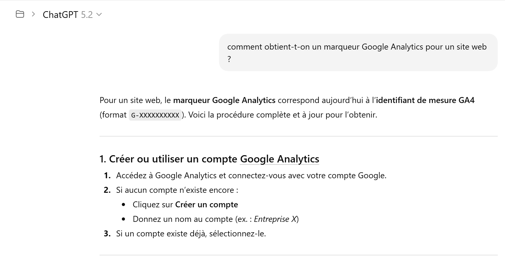 |
 |
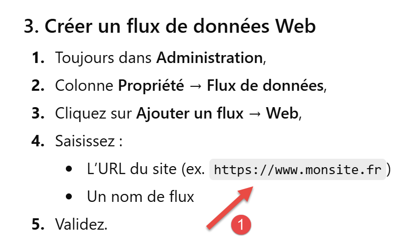 |
- Geben Sie unter [1] die URL Ihrer Website auf GitHub ein;
 |
- Notieren Sie sich unter [2] den Tag für Ihre Website;
Fügen Sie diesen Tag in die Konfigurationsdatei [config.py] ein:
Zeile 4: Geben Sie Ihren Tag ein. MkDocs fügt ihn automatisch in alle Ihre HTML-Seiten ein, wenn die HTML-Website generiert wird. Sie müssen daher die weiteren Anweisungen von ChatGPT, die zeigen, wie Sie den GA-Tag in Ihre HTML-Seiten einfügen, nicht befolgen.
Wir werden ChatGPT um genaue Anweisungen bitten, um zu überprüfen, ob der Tag funktioniert:
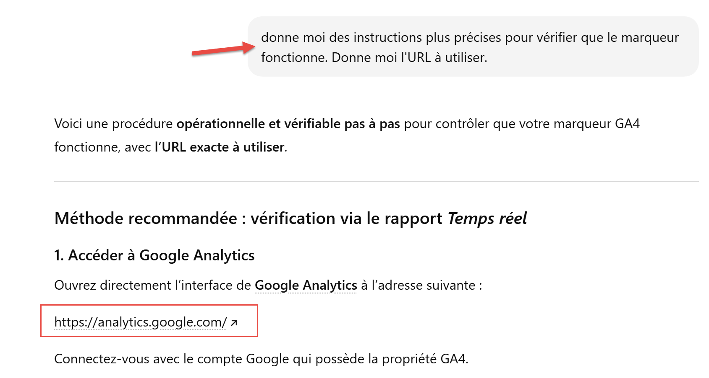 |
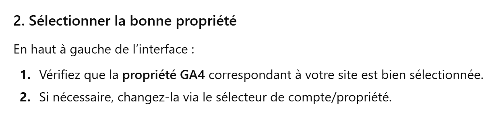 |
Der vorherige Schritt ist nicht ganz klar. Hier sind einige Screenshots, die Ihnen helfen sollen:
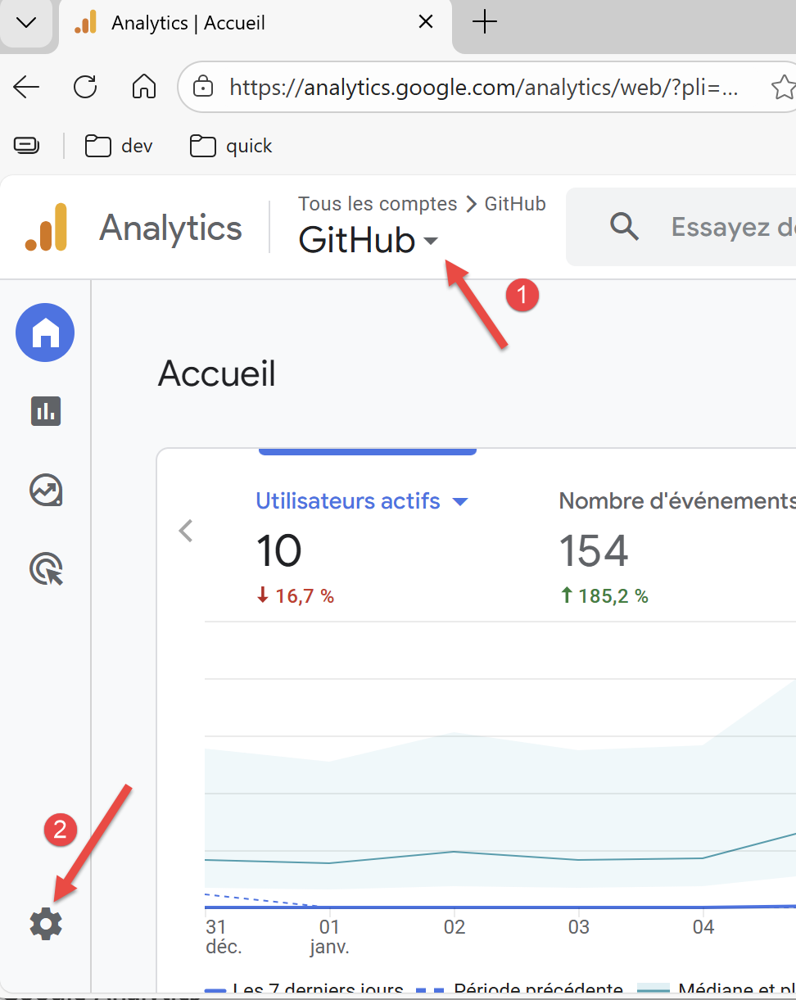 |
- Wählen Sie unter [1] das Konto aus, das Sie verfolgen möchten (falls Sie mehrere haben);
- Wählen Sie unter [2] die Schaltfläche „Verwaltung“ aus;
 |
- Wählen Sie unter [3] „Datenfeed“ aus;
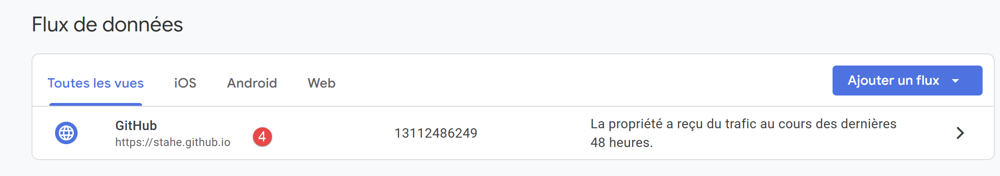 |
- Klicken Sie unter [4] auf den Datenfeed;
 |
- Unter [5] finden Sie den von Ihnen erstellten GA4-Tag;
- Unter [6] die Stream-ID. Dies ist ein anderer Begriff als die Mess-ID;
Kehren wir zur Startseite von GA zurück:
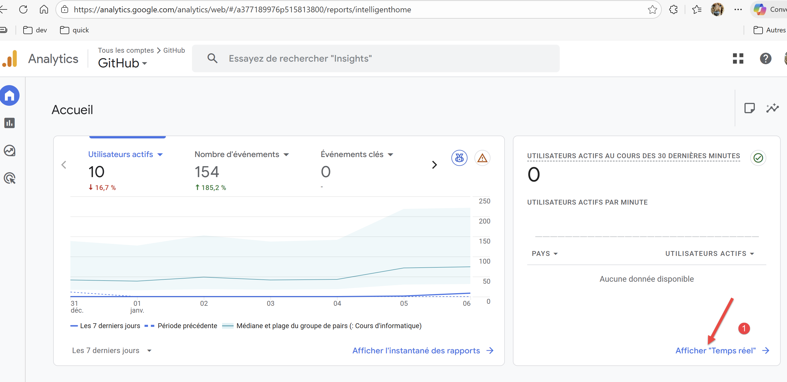 |
- Wählen Sie unter [1] die Echtzeit-Anzeige der Besuche aus;
 |
- Unter [1] sehen Sie Ihre Besucher;
- In [2] die Seite, die besucht wurde. Ich habe den Gemini-Konverter gebeten, den Namen der Website anstelle des Seitennamens mit dem GA4-Tag zu verknüpfen. Diese Umbenennung in Verbindung mit GA4 wird durch die Datei [analytics.html] gewährleistet:
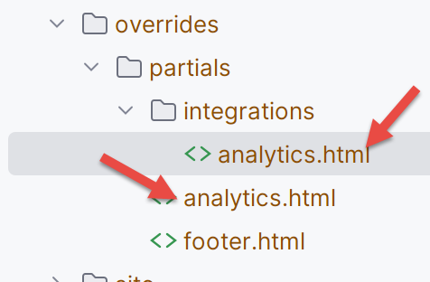 |
Nun können wir mit den Erklärungen von ChatGPT fortfahren:
 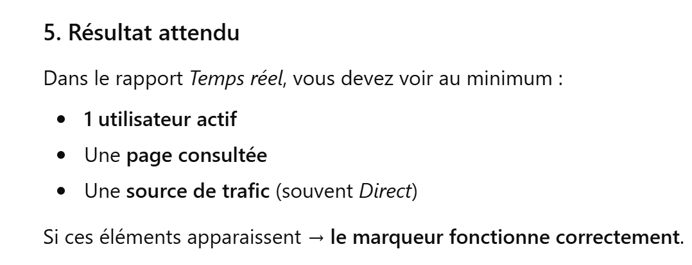 |
Ich habe die in [4] geforderten Schritte ausgeführt, ohne ein privates Fenster zu verwenden. Und ich habe Folgendes erhalten:
 |
Das GA4-Tag von Google Analytics funktioniert einwandfrei.
Nun stellen wir ein weiteres Tool zur Überwachung Ihrer Website vor: [Google Search Console]. Fragen wir ChatGPT, wozu dieses Tool dient:
 |
Ich nutze dieses Tool so gut wie nie. Ich tue dies nur, um die Google-Suchmaschine dazu anzuregen, die Seite zu crawlen und zu indexieren, damit Internetnutzer sie finden können.
Die URL des Tools [https://search.google.com/search-console]:
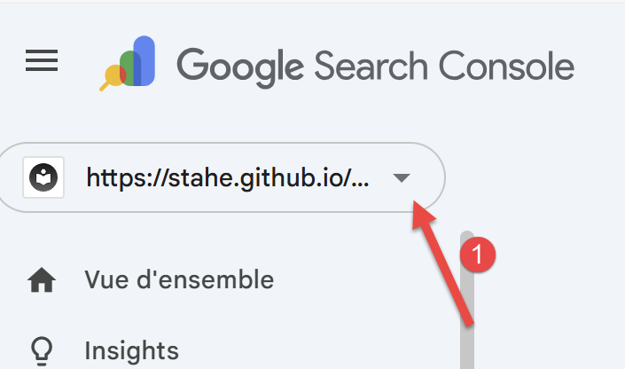 | 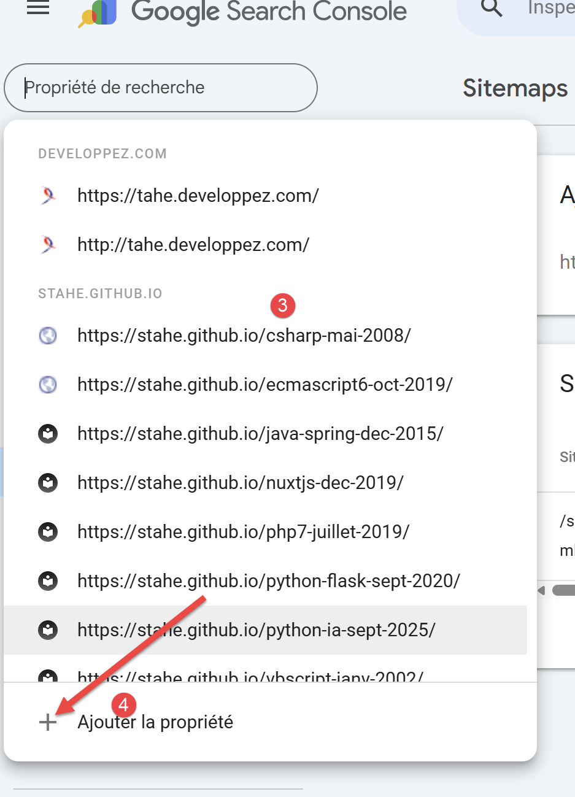 |
- Unter [1] die Liste der Websites, die bei Google angemeldet wurden;
- Unter [3] die Liste Ihrer Websites;
- Unter [4] fügen Sie Ihre neue Website hinzu;
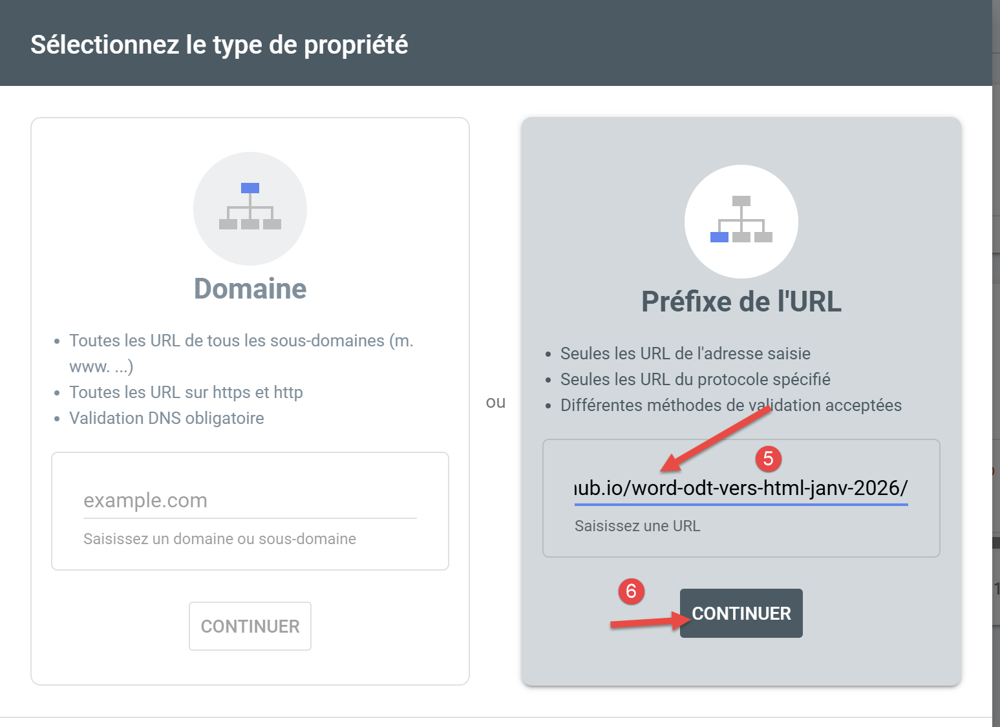 |
- Unter [5] geben Sie die URL Ihrer Website ein. Diese finden Sie in der Datei [config.py]:
- unter [6] fahren Sie mit dem nächsten Schritt fort;
Normalerweise schlägt Ihnen die Google Search Console in diesem Schritt eine Datei [googlexxxxx.html] vor, die Sie herunterladen müssen. Dieser Bildschirm wurde mir nicht angezeigt, da ich diese Datei bereits auf der bereitgestellten Website hatte. Es handelt sich um eine der beiden in [config.py] deklarierten Dateien
Legen Sie die Datei [googlexxxxx.html] im Stammverzeichnis Ihres Arbeitsordners ab und tragen Sie ihren Namen in Zeile 2 der Datei [config.py] ein. Das Skript [convert] sorgt dafür, dass die beiden oben genannten Dateien im Stammverzeichnis der von ihm generierten MkDocs-Website abgelegt werden. Das Skript [build] legt sie im Stammverzeichnis der generierten HTML-Website ab.
Wenn Sie die Datei [googlexxxxx.html] in das Stammverzeichnis Ihres Arbeitsordners kopiert haben, überprüfen Sie den Inhalt der Datei [robots.txt]:
 |
Der Inhalt der Datei [robots.txt] lautet wie folgt:
Überprüfen Sie in Zeile 3, ob die URL die Ihrer Website ist, also dieselbe wie in der Datei [config.py].
Stellen Sie Ihre Website erneut auf GitHub bereit, indem Sie die folgenden drei Befehle in Ihr Python-Terminal eingeben:
Kehren Sie anschließend zur [Google Search Console] zurück und wählen Sie die zuvor erstellte Website aus.
 |
 |
- Wählen Sie unter [1] die Option [Sitemaps] aus;
- Geben Sie unter [2] [sitemap.xml] ein;
- Bestätigen Sie unter [3] die URL;
Die Datei [sitemap.xml] ist eine Datei, die Mkdocs im Stammverzeichnis der auf GitHub exportierten HTML-Website abgelegt hat. Sie können überprüfen, ob sie vorhanden ist, indem Sie ihre URL direkt eingeben:
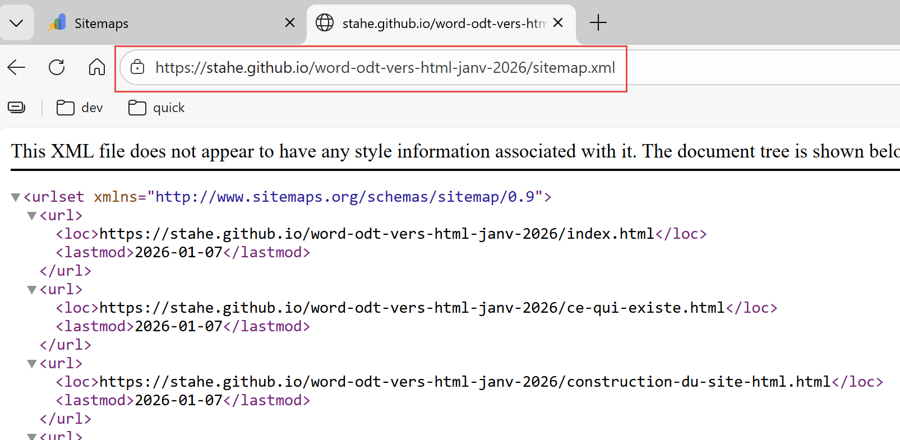 |
Die Datei [sitemap.xml] listet alle HTML-Seiten der Website auf.
Wenn alles geklappt hat, erscheint der folgende Bildschirm:
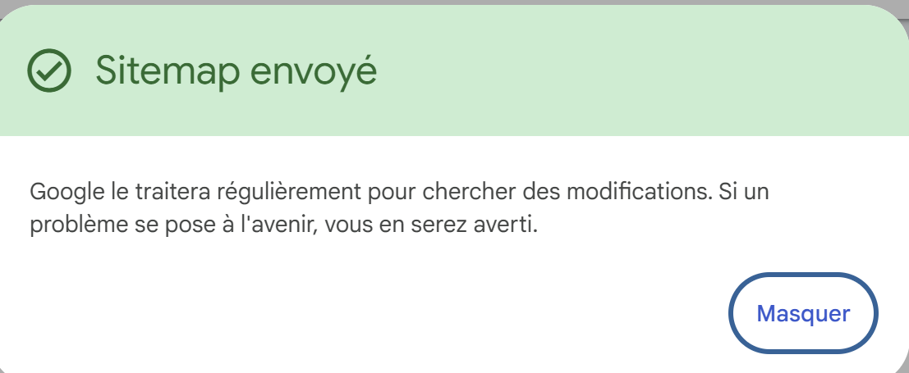 |
Das war's. Sie müssen die Seiten der Website selbst indexieren:
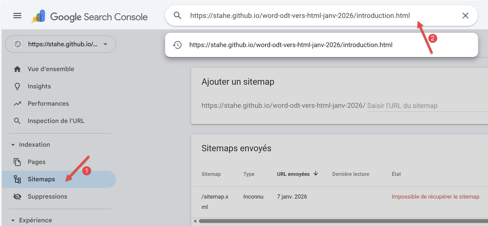 |
- Geben Sie unter [2] die URL einer der Seiten Ihrer Website ein;
Hier ist das Ergebnis:
 |
- Unter [1] gibt Google an, dass die Seite noch nicht indexiert ist;
- Unter [2] können Sie die Indizierung beantragen;
Die Google Search Console prüft dann, ob die angeforderte Seite indexiert werden kann. Wenn ja, erhalten Sie folgende Meldung:
 |
Sie können dies für alle Seiten Ihrer Website tun, um sicherzustellen, dass sie von der Google-Suchmaschine ordnungsgemäß indexiert wird.